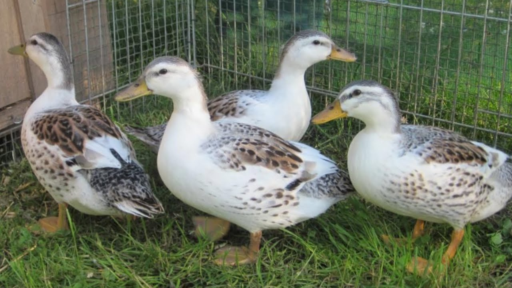

Cerrar pestaña
Inicio
Información
Un Mundo Sin... Patos
☰
Anatidae
Especies de patos
Pato pekín americano
Pato corredor indio
Pato Cayuga

Silver Appleyard
Orpington Duck
Canard de Bourbourg
Canard de Challans
Hook Bill
Esta es la
Plantilla